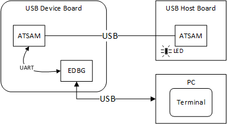

This application demonstrates the use of the CDC Host Class Driver to enumerate and operate a CDC Device. The application uses the USB Host_layer and CDC class driver to enumerate a CDC USB device. The demonstration host application then operates and uses the functionality of the attached CDC Device.
- Open_the MPLAB X IDE project corresponding to the selected board. Refer to the Building the Application section for details.
- Build the code and program the device.
- Follow the directions for setting up and running the cdc_serial_emulator USB device demonstration.
- Connect the USB Device connector of the CDC USB Device board to the USB Host Target board. Refer to the Configuring the Hardware section for any converter requirements.
- Start a terminal program on the USB Host personal computer and select the Serial-to-USB Dongle as the communication port. Select the baud rate as 9600, no parity, 1 Stop bit and no flow control.
- A prompt (LED :) will be displayed immediately on the terminal emulation program.
- Pressing the 1 key on the USB Host keyboard will cause the LED on the Host USB board to switch on. Refer to the Configuring the Hardware section for details on the relevant LED. Pressing any other key at the prompt message will cause the LED to switch off.
- The prompt will again be displayed on terminal emulation program, and step 7 can be repeated.
The setup should be similar to the following diagram.

The cdc_serial_emulator demonstration emulates a USB-to-Serial Dongle. The CDC Host (running the cdc_basic demonstration application) sends the prompt message to the CDC device. The CDC device forwards the prompt to the UART port from where it is transmitted to the personal computer USB Host through the USB serial interface. A key press on the personal computer USB Host is transmitted to the CDC device, which in turn presents the key press data to the CDC host. The cdc_basic demonstration then analyzes the key press data and switches on the respective LED.